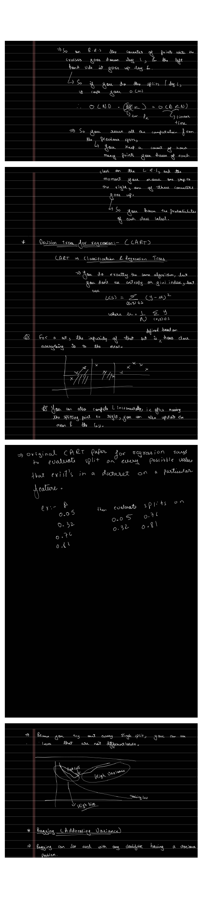

CART, Complexity & Pruning
Three practical threads finish the single-tree story: how the same algorithm does regression (CART), how to make the split search fast, and how to stop a tree from overfitting through pruning.
CART: Regression Trees
CART stands for Classification And Regression Trees. The tree-growing algorithm is exactly the same as before; only the impurity measure changes. For regression there are no classes to count, so entropy and Gini are replaced by the squared error around the mean:
$$L(S) = \sum_{(x,y)\,\in\, S} (y - \bar{y})^2, \qquad \bar{y} = \frac{1}{N}\sum_{(x,y)\,\in\, S} y.$$The impurity of a set is how close everything in it is to its own mean. A pure regression node is one whose targets are all near a single value, and the leaf predicts that leaf's mean $\bar y$. Just like the mean and the count, $L$ can be maintained incrementally as the split point moves, so the mean and loss of each side update in $O(1)$ per step.
The Complexity of Split Search
To split a node, the impurity of every candidate split must be evaluated. For a split into $S_L$ and $S_R$, that impurity is
$$\frac{|S_L|}{|S|}\,H(S_L) + \frac{|S_R|}{|S|}\,H(S_R).$$Done naively this is expensive. There are $D$ features, and for each feature up to $N$ candidate split positions, and re-estimating the $K$ class probabilities to compute $H$ from scratch costs $O(KN)$. That gives
$$O\big(D \cdot N \cdot KN\big) = O(D N^2 K),$$quadratic in the number of points. The fix is the same idea that powers so many array sweeps: sort once, then reuse work.
From Quadratic to Linear: the Sorted Sweep
Sort the points of a feature once, in $O(N\log N)$. Then sweep a threshold from left to right. Keep a running count, per class, of how many points lie on the left side. The moment the threshold steps past one point, exactly one left-counter goes up and one right-counter goes down. The impurity of each side is recomputed from those counts in $O(K)$, with no rescan of the data. Each feature now costs $O(N\log N)$ to sort plus an $O(NK)$ sweep, so the whole split search drops to roughly
$$O\big(D N K \log N\big),$$linear in $N$ up to the sort. The animation shows the single-counter update that makes each step $O(1)$.
▶ The Sorted Sweep: One Counter Changes per Step
Points are sorted by feature value. As the threshold steps right, the boundary point moves from the right set to the left set: its class counter goes up on the left and down on the right. Only two counters change, so each step is $O(1)$.
Pruning and Regularization
An unrestricted tree grows until every leaf is pure, which memorizes noise. Several knobs limit that:
- Pruning removes a split from the bottom up: if cutting a leaf's parent split does not worsen validation error, remove it. This shrinks the tree and, in essence, deletes learnt noise.
- Limit the number of leaves.
- Set a minimum leaf size, the minimum number of items allowed in a leaf.
- Forbid leaves with too few items.
All of these trade a little training accuracy for lower variance. They sit on the bias-variance spectrum that frames everything that follows.
Bias and Variance of a Tree
| Tree depth | Behavior |
|---|---|
| Small depth | High bias: too coarse to capture the signal. |
| Large depth | High variance: fits the training set, including noise. |
A single tree is hard to place in a sweet spot. The honest summary from the notes is blunt: in their vanilla form, decision trees are unstable. The next two parts fix that, by reducing variance with bagging and random forests (Part 5) and reducing bias with boosting (Part 6).
